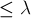
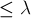

MAXimal
добавлено: 10 Jun 2008 23:10
редактировано: 31 Aug 2011 23:05
Содержание [скрыть]
Построение графа с указанными величинами вершинной и рёберной связностей и наименьшей из степеней вершин
Даны величины  , ,
, ,  — это, соответственно, вершинная связность, рёберная связность и наименьшая из степеней вершин графа. Требуется построить граф, который бы обладал указанными значениями, или сказать, что такого графа не существует.
— это, соответственно, вершинная связность, рёберная связность и наименьшая из степеней вершин графа. Требуется построить граф, который бы обладал указанными значениями, или сказать, что такого графа не существует.
Соотношение Уитни
Соотношение Уитни (Whitney) (1932 г.) между рёберной связностью , вершинной связностью и наименьшей из степеней вершин :

Докажем это утверждение.
Докажем сначала первое неравенство:  . Рассмотрим этот набор из рёбер, делающих граф несвязным. Если мы возьмём от каждого из этих ребёр по одному концу (любому из двух) и удалим из графа, то тем самым с помощью  удалённых вершин (поскольку одна и та же вершина могла встретиться дважды) мы сделаем граф несвязным. Таким образом, .
. Рассмотрим этот набор из рёбер, делающих граф несвязным. Если мы возьмём от каждого из этих ребёр по одному концу (любому из двух) и удалим из графа, то тем самым с помощью  удалённых вершин (поскольку одна и та же вершина могла встретиться дважды) мы сделаем граф несвязным. Таким образом, .
Докажем второе неравенство:  . Рассмотрим вершину минимальной степени, тогда мы можем удалить все смежных с ней рёбер и тем самым отделить эту вершину от всего остального графа. Следовательно, .
. Рассмотрим вершину минимальной степени, тогда мы можем удалить все смежных с ней рёбер и тем самым отделить эту вершину от всего остального графа. Следовательно, .
Интересно, что неравенство Уитни нельзя улучшить: т.е. для любых троек чисел, удовлетворяющих этому неравенству, существует хотя бы один соответствующий граф. Это мы докажем конструктивно, показав, как строятся соответствующие графы.
Решение
Проверим, удовлетворяют ли данные числа , и соотношению Уитни. Если нет, то ответа не существует.
В противном случае, построим сам граф. Он будет состоять из вершин, причём первые вершины образуют полносвязный подграф, и вторые вершины также образуют полносвязный подграф. Кроме того, соединим эти две части рёбрами так, чтобы в первой части эти рёбра были смежны вершинам, а в другой части — вершинам. Легко убедиться в том, что полученный граф будет обладать необходимыми характеристиками.